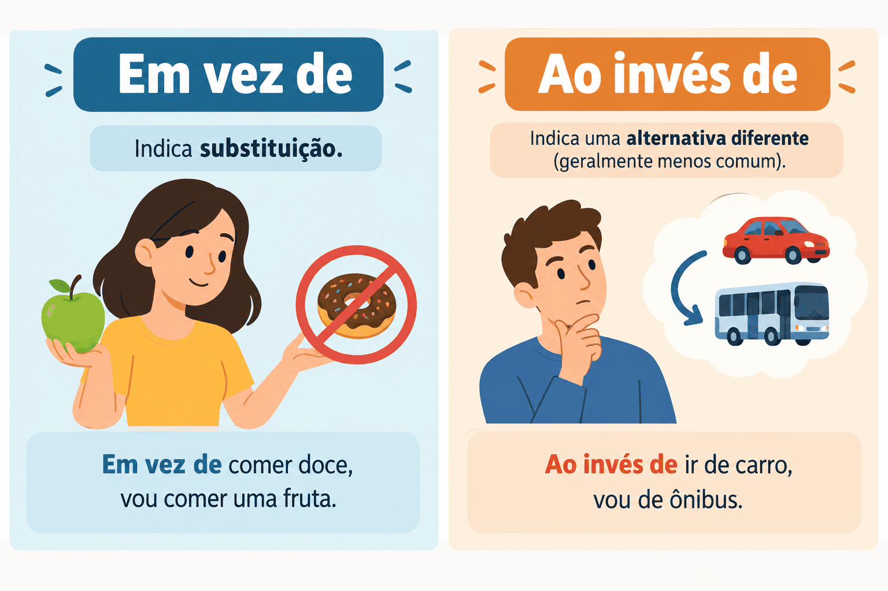

Em Vez De ou Ao Invés De: Diferenças e Quando Usar Cada Um
Aprenda a diferença definitiva entre em vez de e ao invés de na Língua Portuguesa. Entenda quando a locução expressa oposição absoluta de antônimos ou simples substituição e alternativa, dominando a locução coringa para não errar na redação.